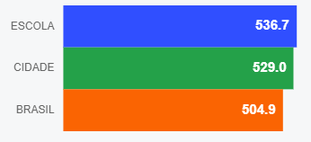
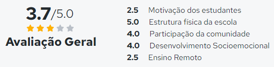

YVONE PIMENTEL E PAULO PIMENTEL, personalidades da política do estado.
Paulo Cruz Pimentel, nasceu em Avaré, Estado de São Paulo, a 07 de agosto de 1928, filho de Público Pimentel e Maria Izabel Cruz Pimentel. Fez seus estudos fundamentais em Avaré e Botucatu. Formou-se em 1953 pela Faculdade de Direito da Universidade de São Paulo, veio para o Paraná em 1955, radicando-se em Porecatu, onde passou a dirigir empresa de usina de açúcar. No governo de Ney Braga, foi secretário da agricultura. Candidato a governador pelo Partido Trabalhista Nacional foi eleito em outubro de 1965. Na administração continuou com programas de expansão econômica, estendeu para o interior o serviço de luz e energia. Em seu governo Paulo Pimentel foi responsável, pela interiorização do ensino superior, com a criação de universidade estaduais em Londrina, Maringá e Ponta Grossa. Quando ainda trilhava seu caminho na política, Paulo Pimentel foi um prefeito de Curitiba, criando, em homenagem à sua esposa, o lar Yvone Pimentel que abrigava meninas com 12 anos a 18 anos de idade, com a função de reeducar e recuperar ás adolescentes abandonadas e carentes de recursos financeiros. A unidade social Yvone Pimentel, a partir de 1978, passa ter uma parceria entre estado, município e comunidade e após muito pedido e necessidade o lar vira uma escola para todos. Hoje o colégio atende cerca de 900 alunos, desde o Ensino Fundamental – anos iniciais, Ensino Médio e Educação de Jovens e Adultos. Além disso, oferece à comunidade atividades de contra turno e apoio à educação inclusiva, com salas de apoio e de recurso.
a
endereço
Colégio Estadual Yvone Pimentel
ZA WARUDO!!!
Qual a estrutura do Yvone Pimentel C E Ef M?
O Yvone Pimentel C E Ef M oferece toda a estrutura necessária para o conforto e desenvolvimento educacional dos seus alunos, como por exemplo: Internet, Banda Larga, Reciclagem de Lixo, Refeitório, Biblioteca, Quadra Esportiva Coberta, Laboratório de Ciência, Laboratório de Informática, Auditório, Pátio Coberto, Pátio Descoberto, Área Verde, Sala do Professor e Alimentação.
Qual o desempenho do Yvone Pimentel C E Ef M na nota do ENEM?
Veja abaixo como foi o desempenho do Yvone Pimentel C E Ef M no ENEM 2019, comparado ao desempenho das demais escolas da cidade e do Brasil:
Média geral da escola no Enem
Fonte: INEP/ENEM 2019
Ver todos os indicadores do ENEM
ola mundo hehe
O Yvone Pimentel C E Ef M é bem avaliado?
O Yvone Pimentel C E Ef M é muito bem avaliado pelos pais, alunos e funcionários da instituição, reflexo do comprometimento com um ensino de qualidade que a escola oferece.
ola mundo hehe
espaços escolares
SAÍDA E ENTRADA PRINCIPAL
É por este lado da escola em que os alunos entram e saem. A parte do portão é onde alunos que seus pais ou conduções vão buscar ficam esperando e o portão maior é por onde alunos à pé saem

entrada direção
É por este local que os responsaveis dos alunos entram na escola para falar com a direção do colegio.

auditório
É neste local onde ocorrem palestras e reuniões com os alunos.
pátio
Este local tem varias utilidades, é neste local onde ocorre aulas de educação física, intervalos e a formação e apresentação das turmas.

sala de informática
A sala de informática é usada para efetuar pesquisas e atividades além de ser usada para dar aulas de ingles e pensamento computacional.

quadra esportiva
Na quadra são efetuadas aulas de educação física e gincanas/campeonatos esportivos.

salas de aula
As salas de aula são equipadas com projetores, smart tvs e quadros negros.